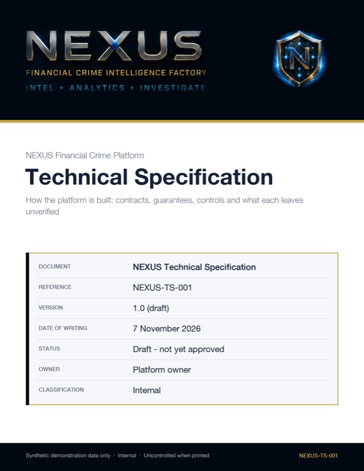

Draft for approval
NEXUS-TS-001 · v1.0
Technical Specification
Architecture, contracts and guarantees for every capability, with security, deployment and the open-issues log.
61 pages
Private
Governance and assurance pack
Ten governed documents written for NEXUS: how it is built, how it is run, how its models work, and how it is tested, recovered and released. Each carries a reference, a version and an approval status. The contents are private intellectual property and are shared on request.
Copies of the drafted documents are available on request, for review only. Statuses are shown as they stand: drafts await an independent approver, and documents in preparation complete at the end of the test phase.